13年前，海歸精英團隊初心啟航，13年後，寅家科技以【全棧自研】的技術，助力驅動業務破界，產業升級，構建更多業務增長引擎，打造 “地面 + 低空 + 作業” 智能生態體系。
我們創新不止，三大產品矩陣持續升級：
一、VT-Pilot® 輔助駕駛系列
VT-AVM 全景環視
VT-APS 全場景智能輔助泊車
VT-FVC ADAS前視一體機
VT-Vulcan® 行泊一體系統
二、VT-Cockpit® 智能座艙系列
VT-CMS 電子外後視鏡
VT-DMS 駕駛員監控系統
VT-E-Mirror 流媒體後視鏡
VT-HUD 抬頭顯示
VT-Smart Lighting 智慧照明燈
VT-DVR 行車記錄儀
三、VT-Camera 智能感知系列
我們步履不停，致力於將技術注入更多熱門賽道，打造第二、第三業務增長極！
-牢築【地面智能】護城河，夯實企業長期發展的第一引擎；
-挺進【低空經濟】，“上天入地”、天地一體；
-佈局【作業機器人】領域，助力打造智能作業場景的全新驅動力。
從地面到低空，從交通工具到工業智能設備，寅家的視野，始終投向未來。
寅家未來，將更加多元、更具競爭力！
2026年，寅家科技還將為行業帶來哪些驚喜？
讓我們“馬”力全開，駛向未來！
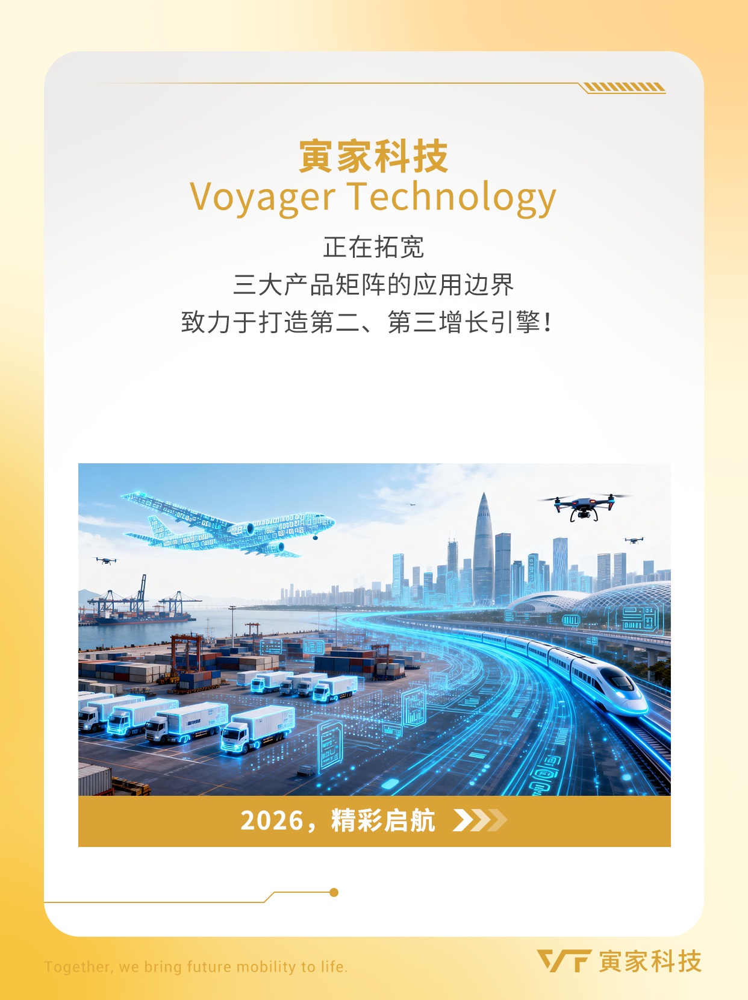
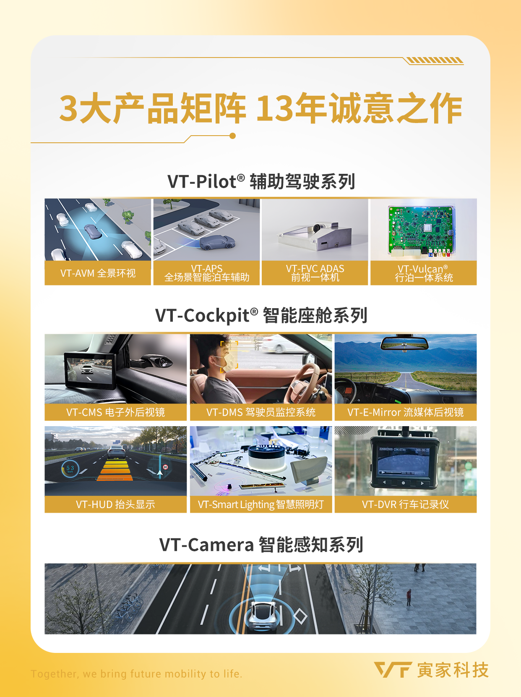
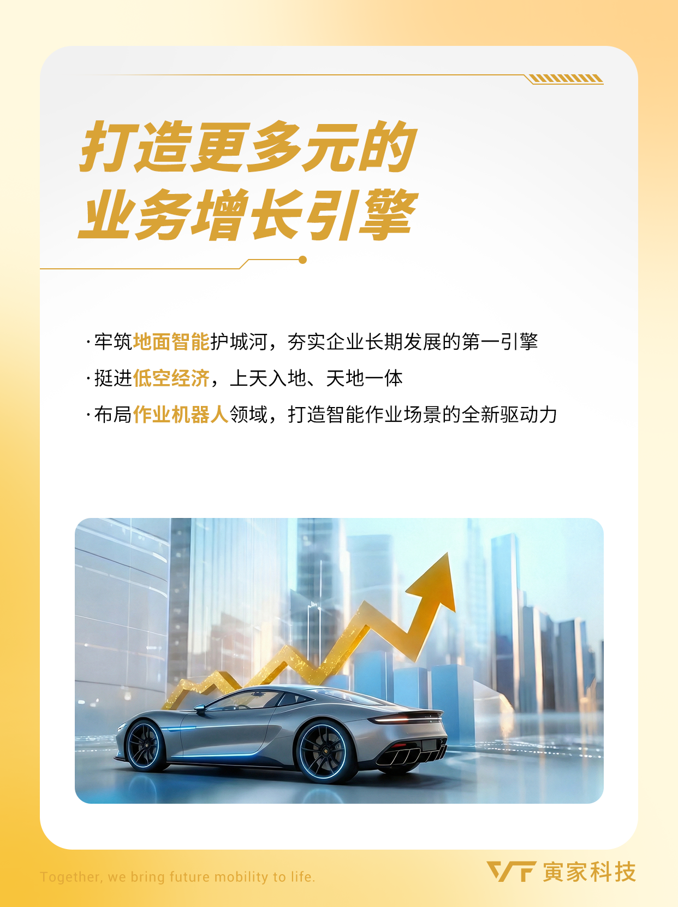
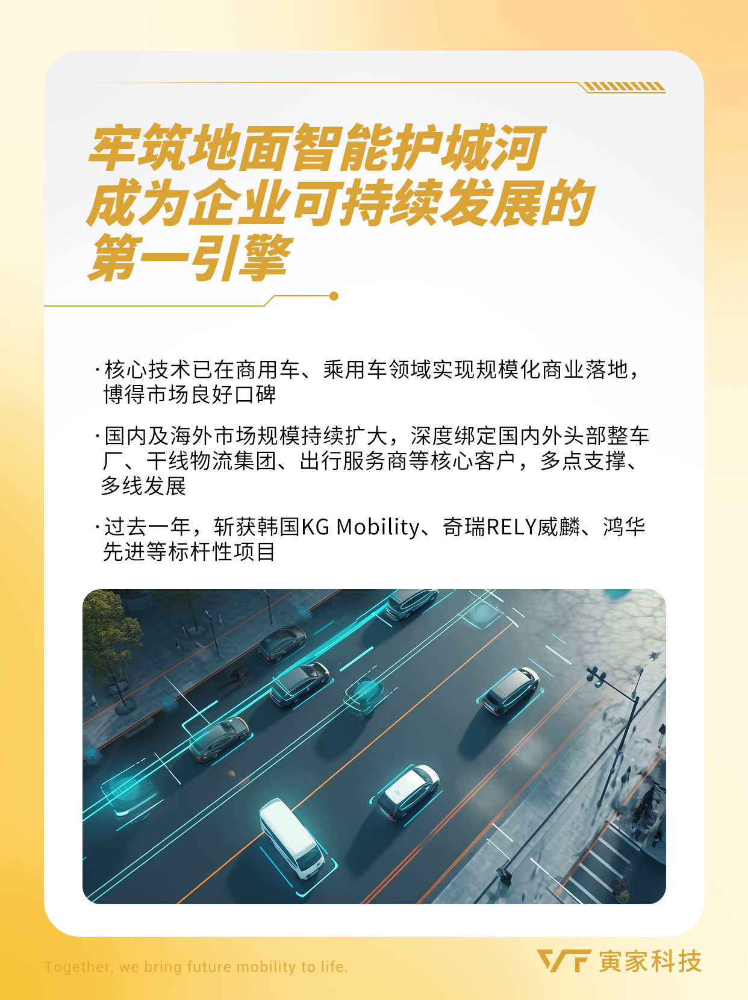
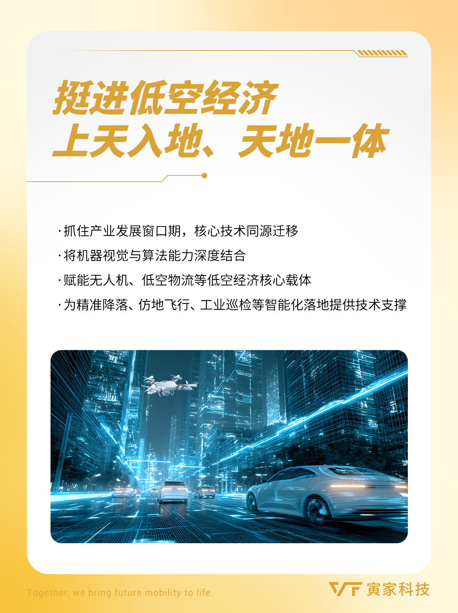
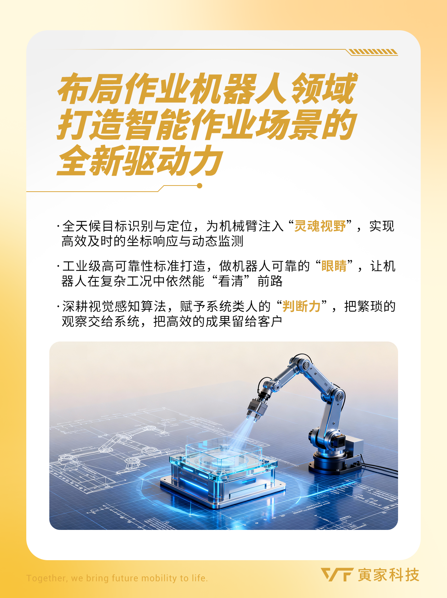
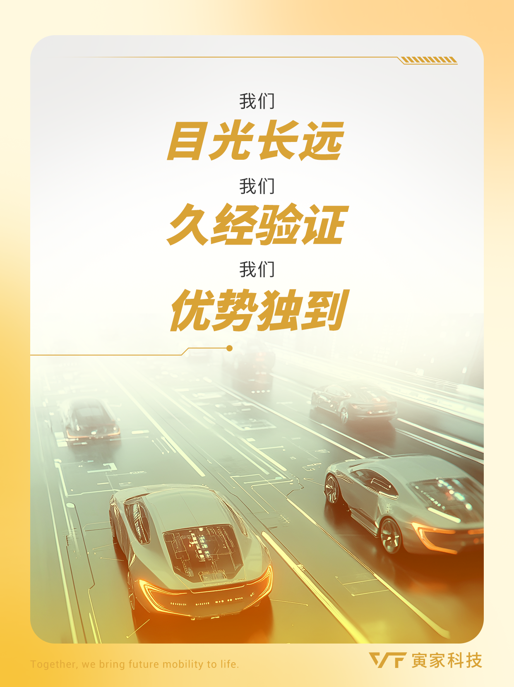
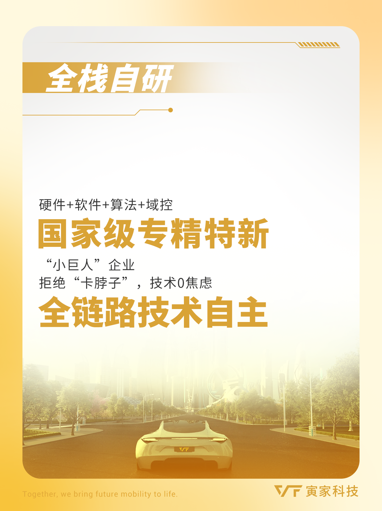
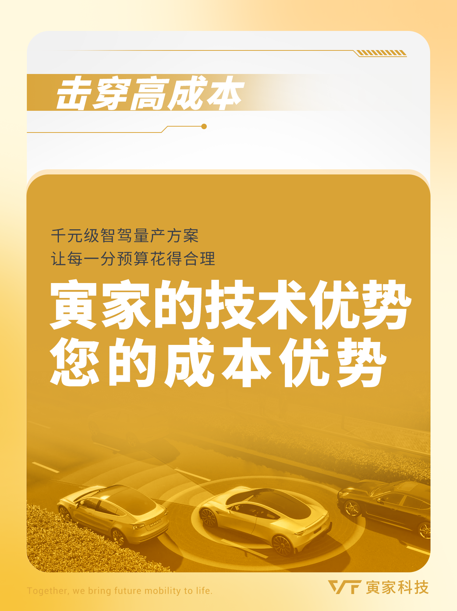
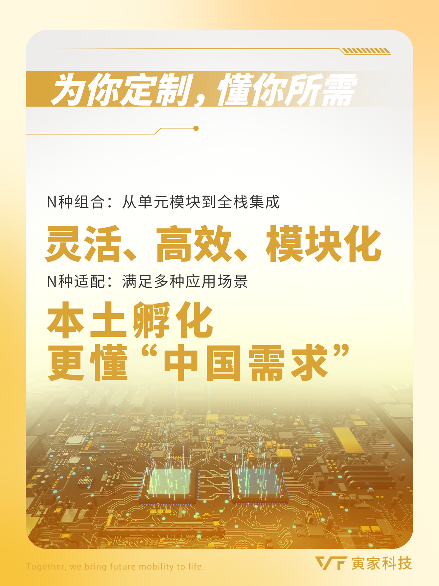
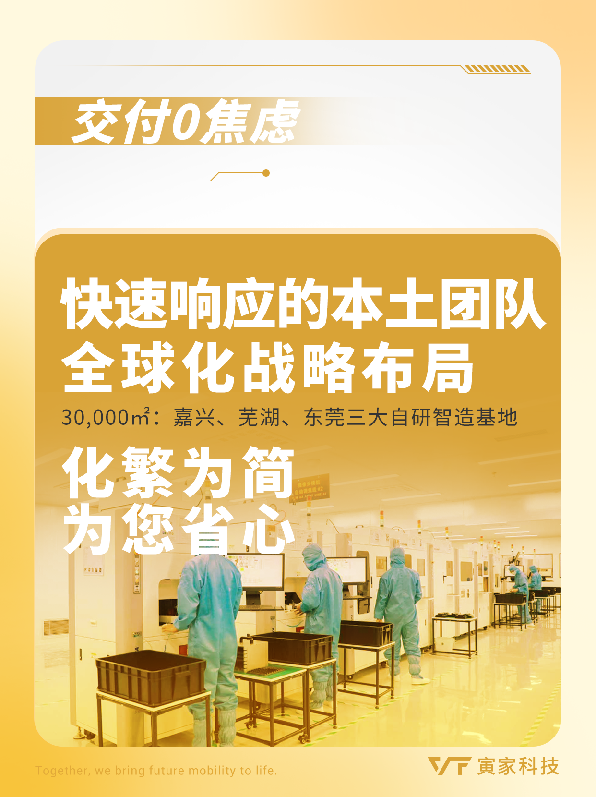
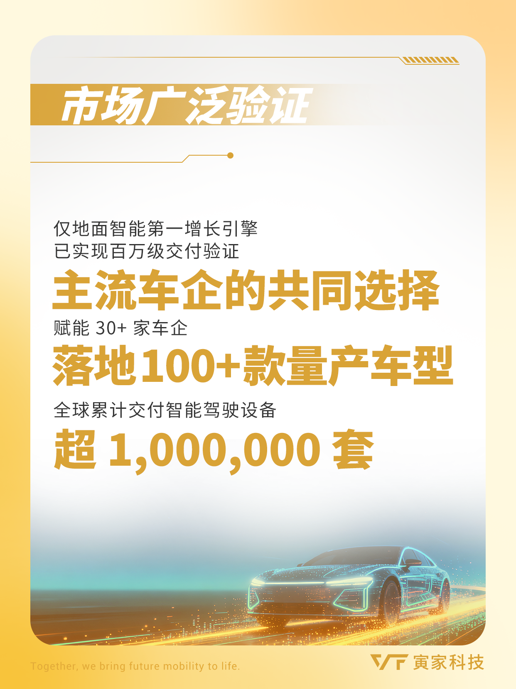